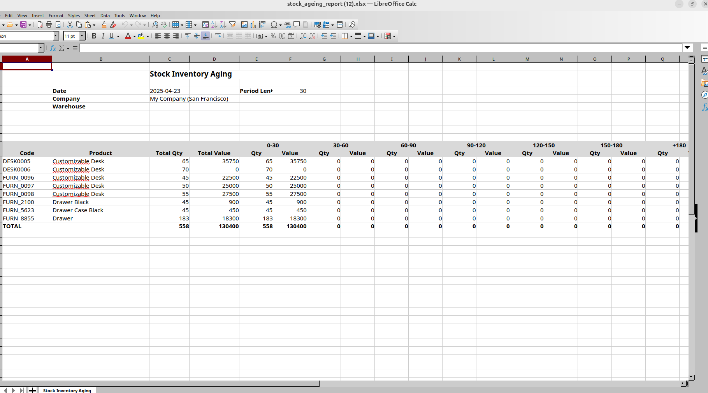

Stock Aging Report for Odoo 18
This module provides aStock Aging Report
It allows users to export a well-formatted Excel file with detailed information on quantity and value per aging period.
Key Features:
- Export Excel report with inventory aging bucket
- Filter by Product or Product Category
- Select multiple Warehouses and Internal Locations
- Include Company and Date filters
- Automatic calculation of Quantity and Value per aging range
- Clean and readable Excel formatting
How to Use:
- Go to Inventory > Reporting > Stock Aging Report
- Fill in the filters: Date, Warehouses, Products or Categories, etc.
- Click Print Excel to download the report
Wizard Form View
Generated Excel Report

Author: Swati Khandelwal